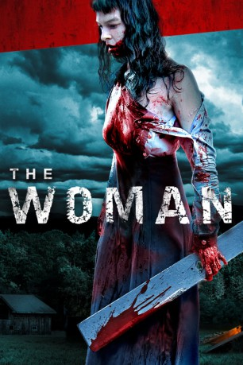
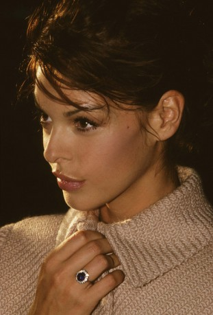
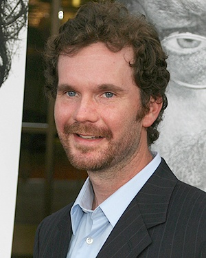
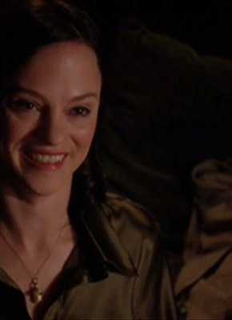

#10406 The Woman
 
 IMDB-Wertung: 6.0 / 10
IMDB-Wertung: 6.0 / 10  Metascore: 58
Metascore: 58 
Chris Cleek, ein perfekter Vater mit Bilderbuchfamilie, trifft bei einem Jagdausflug auf eine verwahrloste Frau und kann das sich wild sträubende Wesen einfangen. Im Keller legt er sie in schwere Ketten und stellt sie nach dem Dinner seiner Familie vor. Gemeinsam, so Chris Plan, sollen die Cleeks die Frau fortan zu einem nützlichen Mitglied der Gesellschaft erziehen. Mit dieser Entscheidung reißt er Frau und Kinder in einen bitteren Strudel des Wahnsinns, an dessen Ende ein Blutbad steht.
Jahr: 2011
Dauer: 102 Minuten
FSK: 18
Land: USA Studio: Bloody DisgustingTonspuren:
Untertitel: Deutsch,
Auflösung: 1080p (1920x1072) Größe: 7342 MB
Genre: Horror
Regisseur: Lucky McKee
Drehbuch: Jack Ketchum, Lucky McKee, Jack Ketchum, Lucky McKee
Soundtrack: Sean Spillane
Darsteller:
-  Pollyanna McIntosh als The Woman
- Lauren Ashley Carter als Peggy Cleek
-  Sean Bridgers als Chris Cleek
-  Angela Bettis als Belle Cleek
- Marcia Bennett als Deanna
- Zach Rand als Brian Cleek
- Joanna Herrington als Vicki
- Alexa Marcigliano als Socket
- Tommy Nelson als Walter (uncredited)
- Brandon Gerald Fuller als Baby
- Chris Krzykowski als Roger
- Shyla Molhusen als Darlin' Cleek
- Gordon Vincent als Clapp Boy
- Shelby Mailloux als Jenny
- Tyler Merlini als Boy #1
- Jordan Carrasquillo als Boy #2
- Jordan Chapalonis als Boy #3
- Carlee Baker als Miss Genevieve Raton
- Amanda Daryczyn als Jackie
- Lindsey Hamlett als Cyndi
- Lauren Schroeder als Dorothy
- Lauren Petre als Miss Hindle
- Michael McKee als Mr. Wolf
- Shana Barry als Fake shemp
- Frank Olsen als Will Campbell (uncredited)
Datei: X:\FSK18-2011\Woman, The (2011, FSK18, 1920x1072).mkv seit 04.01.2019
Festplatte: FSK18
 Es gibt insgesamt 30 Filme in der Gruppe 'FSK18-2011'
Es gibt insgesamt 30 Filme in der Gruppe 'FSK18-2011'